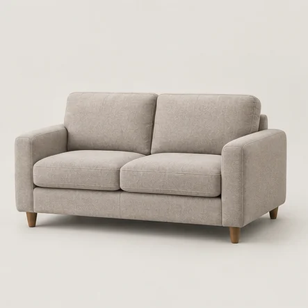
01Sofa 2-osobowa
Dwa miejsca siedzące
180 zł
Najniższa cena z 30 dni przed ofertą dla nowych klientów (2.10.2026): 160 zł.
GDAŃSK · SOPOT · GDYNIA
Profesjonalne pranie tapicerki u Ciebie w domu. Ty wybierasz mebel. My zajmujemy się resztą.
01 — USŁUGI I CENNIK
Bez zgadywania, co oznacza „duża kanapa”.
Wybierz podobny kształt i liczbę miejsc.
Nowym klientom przysługuje 20% rabatu na pranie przy pierwszym zamówieniu. Rabat liczymy od potwierdzonej ceny prania według aktualnego cennika. Zaznacz pierwsze zamówienie w formularzu lub wspomnij o nim podczas rozmowy.
Minimum całego zamówienia po rabacie: 150 zł. Jeśli wyliczona cena po rabacie jest niższa niż 150 zł, obowiązuje minimum 150 zł za wizytę. Rabat nie obejmuje suszenia: +50 zł za całe zamówienie albo GRATIS, gdy cena samego prania po rabacie wynosi co najmniej 400 zł. Rabat nie łączy się z rabatami partnerskimi ani innymi obniżkami. Cenę i uprawnienie do rabatu potwierdzimy przed wizytą.
Przykład: kanapa 3–4-osobowa — obecny cennik 200–220 zł, pierwsze zamówienie 160–176 zł. Najniższa cena z 30 dni przed ofertą: 180–200 zł; oferta jest od niej niższa o ok. 11–12%. Przy sofie 2-osobowej (180 zł) cena pierwszej wizyty wynosi 150 zł ze względu na minimum.
Zapytaj o termin z rabatemKliknij zdjęcie lub przycisk „Wybierz”. Możesz zaznaczyć kilka mebli, a potem przejść do formularza.

01Dwa miejsca siedzące
Najniższa cena z 30 dni przed ofertą dla nowych klientów (2.10.2026): 160 zł.
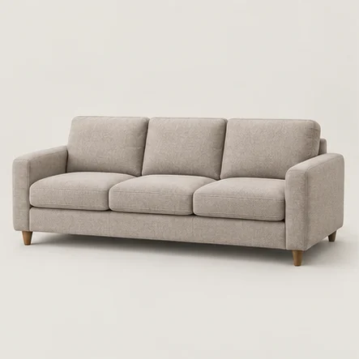
02Trzy lub cztery miejsca
Najniższa cena z 30 dni przed ofertą dla nowych klientów (2.10.2026): 180–200 zł.
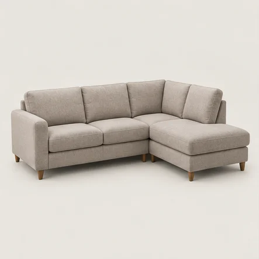
034–5 miejsc · jeden szezlong
Najniższa cena z 30 dni przed ofertą dla nowych klientów (2.10.2026): 220–240 zł.
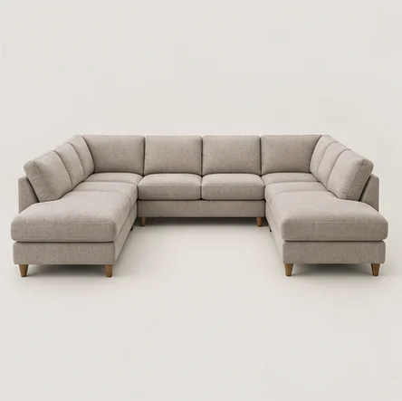
04Dwa szezlongi · kształt U
Najniższa cena z 30 dni przed ofertą dla nowych klientów (2.10.2026): od 240 zł.
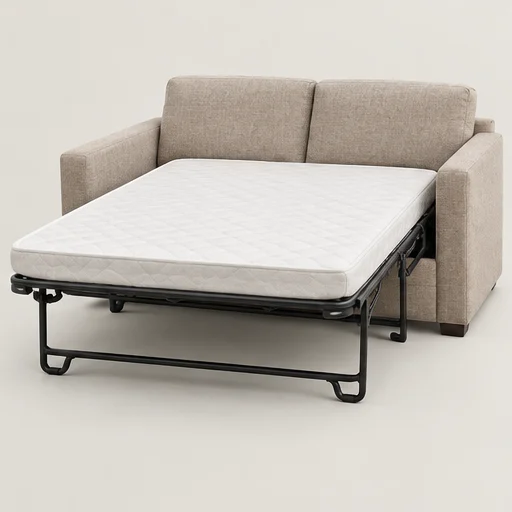
05Dodatkowo do prania kanapy
Najniższa cena z 30 dni przed ofertą dla nowych klientów (2.10.2026): od 40 zł.
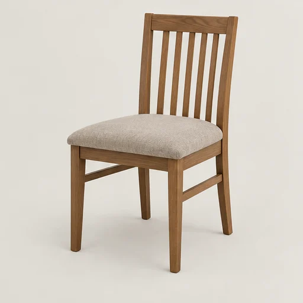
06Pranie bez oparcia
Najniższa cena z 30 dni przed ofertą dla nowych klientów (2.10.2026): 25 zł.
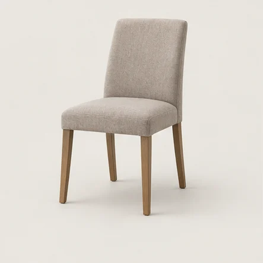
07Siedzisko i oparcie
Najniższa cena z 30 dni przed ofertą dla nowych klientów (2.10.2026): 35 zł.
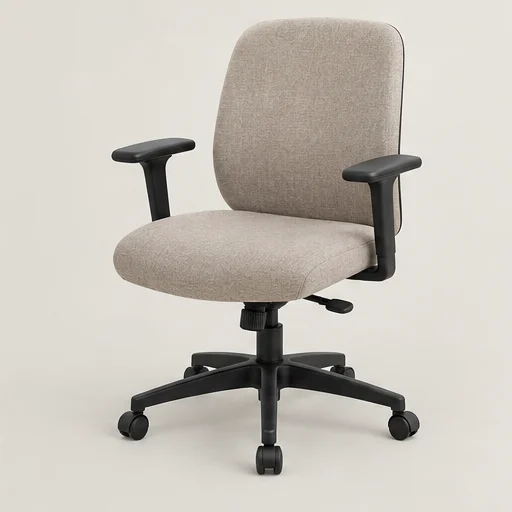
08Tapicerowany fotel do pracy
Najniższa cena z 30 dni przed ofertą dla nowych klientów (2.10.2026): 40–50 zł.
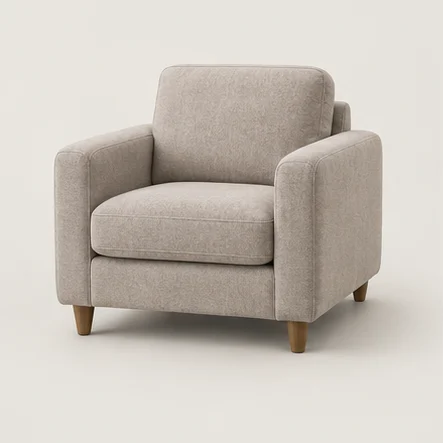
09Jedno wygodne miejsce
Najniższa cena z 30 dni przed ofertą dla nowych klientów (2.10.2026): od 60 zł.
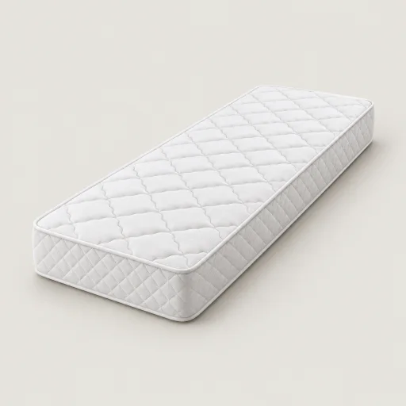
101 strona / 2 strony
Najniższa cena z 30 dni przed ofertą dla nowych klientów (2.10.2026): 70–140 zł.
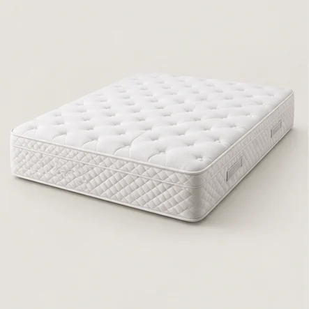
111 strona / 2 strony
Najniższa cena z 30 dni przed ofertą dla nowych klientów (2.10.2026): 140–210 zł.
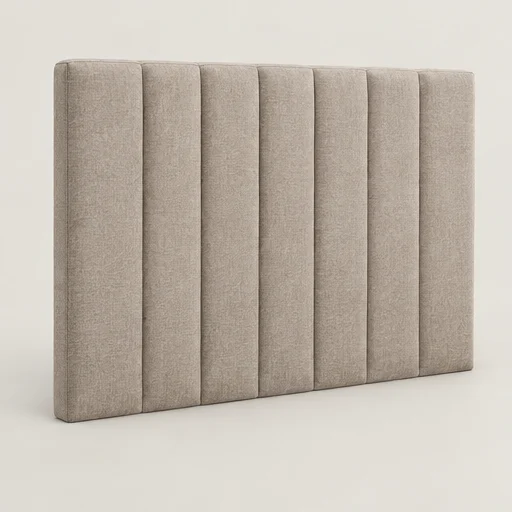
12Tapicerowane wezgłowie
Najniższa cena z 30 dni przed ofertą dla nowych klientów (2.10.2026): 120 zł.
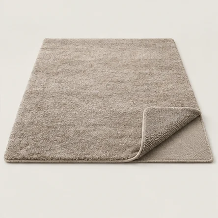
13Cena za metr kwadratowy
Najniższa cena z 30 dni przed ofertą dla nowych klientów (2.10.2026): od 15 zł/m².
Zdjęcia przedstawiają przykładowe typy mebli. Ceny są orientacyjne — ostateczną wycenę potwierdzamy po poznaniu rozmiaru, tkaniny i zabrudzeń. Usługi poniżej 150 zł można łączyć w jednym zamówieniu.
Opisz go w formularzu. Dobierzemy usługę i potwierdzimy cenę.
02 — EFEKTY PRANIA
Tapicerka przed i po czyszczeniu.
Przesuń suwak i zobacz efekt prania.
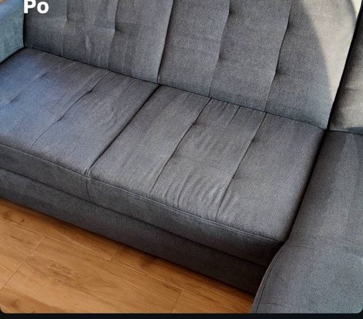
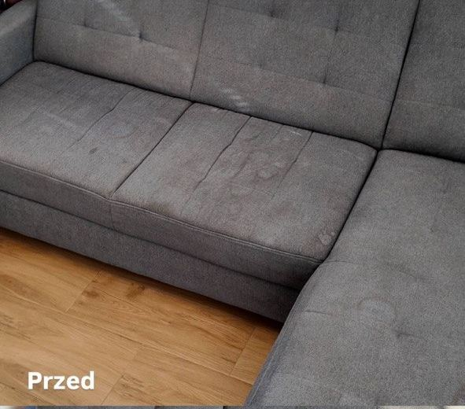
PRZEDPO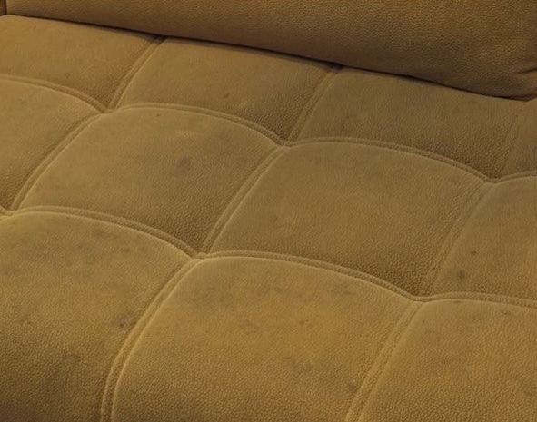
PRZED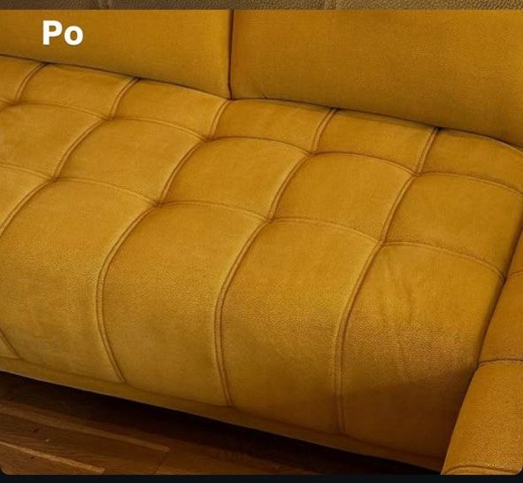
PONie każda plama znika w całości.
Możliwości czyszczenia oceniamy przed pracą.
OPINIE KLIENTÓW
„Praca została wykonana szybko i sprawnie. Polecam!”
„Polecam 😊”
„Pan bardzo mily, punktualny i bardzo dokladny.”
Wybrane fragmenty opinii. Oryginalna pisownia.
Otwórz profil Google ↗03 — PROSTO, OD POCZĄTKU
Zaznacz usługę w cenniku lub zadzwoń. Możesz dodać kilka mebli do jednego zapytania.
Potwierdzamy cenę, adres i dogodny termin. Wysłanie formularza jest zapytaniem o dostępność.
Czyścimy tapicerkę na miejscu. Po pracy wyjaśniamy, jak zadbać o schnięcie i świeżość mebla.
BLISKO CIEBIE
Gdańsk, Sopot czy Gdynia — przy zamówieniu od 150 zł przyjeżdżamy bez opłaty za dojazd.
Sprawdź dostępny termin ↗TRÓJMIASTO I OKOLICE
Pierzemy tapicerkę w Gdańsku, Gdyni i Sopocie oraz w okolicznych miejscowościach. Dojazd w Trójmieście jest bezpłatny przy zamówieniu od 150 zł; warunki dojazdu poza Trójmiasto potwierdzamy przy ustalaniu terminu.
Kanapa 2-osobowa kosztuje 180 zł, kanapa 3–4-osobowa 200–220 zł, narożnik 4–5-osobowy 240–260 zł, a narożnik U od 260 zł. Cenę potwierdzamy po ustaleniu szczegółów. Zobacz cały cennik.
Tak. Dojeżdżamy bezpłatnie na terenie Gdańska, Sopotu i Gdyni. Minimalna wartość zamówienia wynosi 150 zł.
Minimalna wartość całego zamówienia wynosi 150 zł. Możesz połączyć pranie kilku krzeseł, fotela, materaca lub innych mebli podczas jednej wizyty.
Czas zależy od tkaniny, ilości wilgoci, temperatury i wentylacji. Warto zarezerwować czas na schnięcie i nie korzystać z mebla, dopóki nie będzie suchy. Wskazówki otrzymasz po czyszczeniu.
Po praniu kierujemy na meble nawiew profesjonalnych wentylatorów. To sposób na szybsze suszenie kanapy po praniu, fotela lub materaca. Koszt wynosi 50 zł za cały zamówiony zestaw mebli, nie za każdą sztukę. Przy wartości samego prania po rabacie od 400 zł suszenie jest GRATIS. Nie gwarantujemy jednakowego czasu schnięcia dla każdej tkaniny.
Przykłady: pranie 240 zł + suszenie 50 zł = 290 zł; pranie 350 zł + suszenie 50 zł = 400 zł; pranie 400 zł lub 550 zł = suszenie GRATIS.
Nie wszystkie plamy można całkowicie usunąć. Znaczenie mają rodzaj zabrudzenia, czas jego powstania i wcześniejsze próby czyszczenia. Stan materiału i możliwy efekt omawiamy przed rozpoczęciem pracy.
Zapewnij dostęp do mebla, wody i prądu. Usuń z tapicerki rzeczy osobiste i drobne przedmioty. Jeśli nie wiesz, czy materiał nadaje się do prania, wspomnij o tym w zapytaniu.
Formularz wysyła zapytanie. Kontaktujemy się z Tobą, aby potwierdzić cenę oraz dzień i godzinę wizyty. Nie pobieramy płatności przez stronę.
05 — ZRÓB MIEJSCE NA ŚWIEŻOŚĆ
Opowiedz, co chcesz wyczyścić.
Skontaktujemy się, żeby ustalić szczegóły.